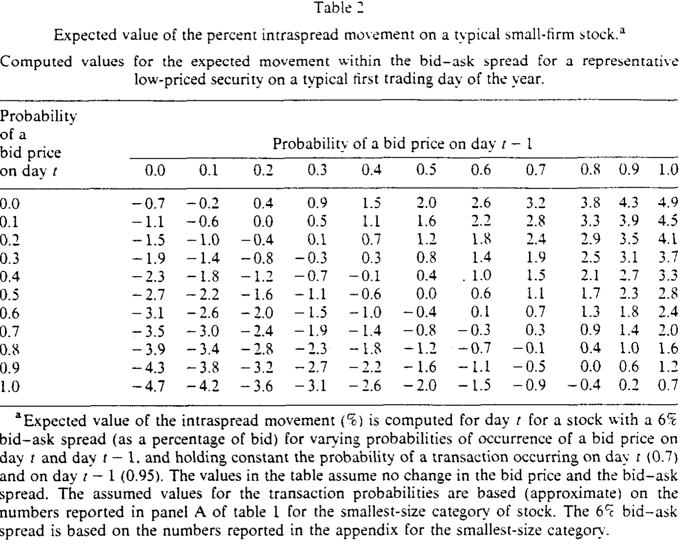
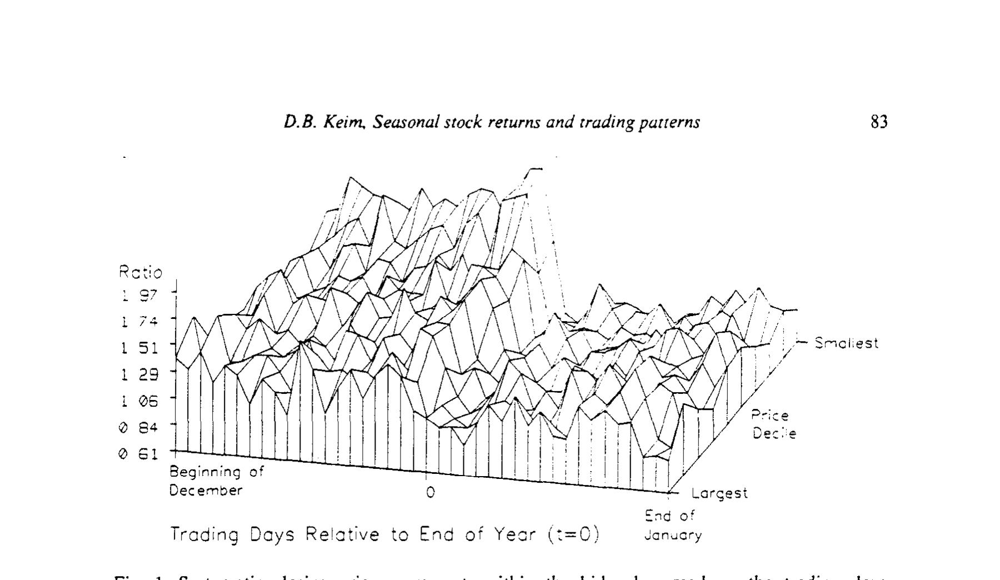
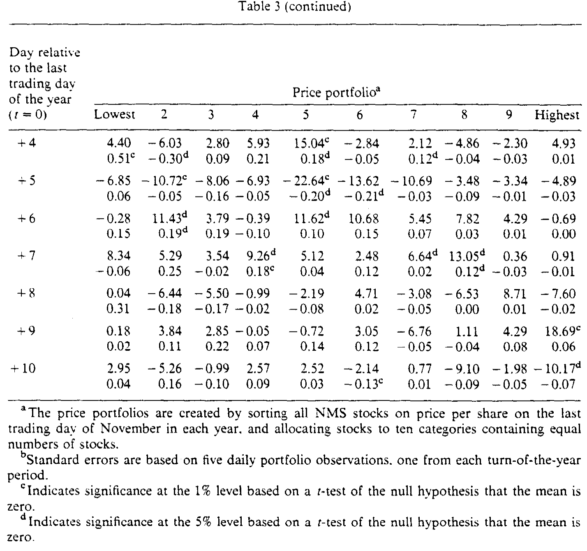
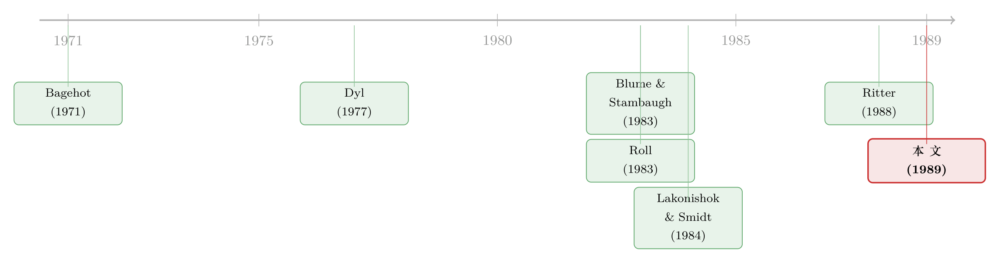

你以为赚到的那 9%，可能只是收盘价从买价挪到了卖价
本文读的是 Keim (1989, Journal of Financial Economics)：我们在 CRSP 上算出的股票日收益，其实是用「最后一笔成交价」拼出来的；而 Keim 发现，年末投资者系统性地把收盘价砸在买价上、年初又系统性地抬到卖价上——于是即便真实价格一动不动，年末年初那两天也会凭空冒出一笔大到 2% 的正收益，越是低价股越夸张。著名的「一月效应」，有一块是这么「算」出来的。
1 引言：一道你从没怀疑过的「乘法题」
做实证的人，每天都在和 CRSP 的日收益率打交道。我们把它当成天经地义的输入：今天的价格除以昨天的价格，减一，就是收益。可有没有人停下来问一句——这两个价格，到底是什么价格？
答案会让你有点不安。CRSP 的日收益，是用当天最后一笔成交价 (closing transaction price) 算的；如果这只股票今天压根没成交，CRSP 就退而求其次，记一个买价与卖价的平均数 (average of bid and ask)。换句话说，你那道收益率的「乘法题」，分子分母里塞着的，可能是一个买价、一个卖价、或者一个买卖中点——而这三者之间，隔着一整条买卖价差 (bid-ask spread)。
平时这不是问题。只要买家和卖家随机地、对称地出现，成交价落在买价还是卖价就只是噪声，正负抵消，对组合收益没有系统性影响。Blume and Stambaugh (1983) 早就告诉我们，这种噪声会给收益带来一个向上的偏差 (bias)，但那是个常数，是「水位」，不影响你比较不同时点的「水流」。
但真正关键的问题是：如果买卖双方的出现不是随机的呢？ 如果在某些特定的日子里，全市场的投资者像约好了一样，今天集体在买价上成交、明天又集体在卖价上成交——那这道乘法题算出来的，就不再是收益，而是一段在价差内部的「位移」被误当成了价格的「位移」。
Keim (1989) 抓住的，正是这样一个日子：年末年初 (turn of the year)。
2 一个被「税」搅动的转折点
为什么偏偏是年末？因为这是一年里投资者买卖行为最剧烈、也最有方向性的一个拐点。
故事的上半段叫避税性抛售 (tax-loss selling)。Dyl (1977) 很早就发现，临近年底，那些当年下跌的「输家」股票会出现反常的抛售量——投资者赶在年底之前卖掉亏损头寸，好把资本损失兑现、抵掉税。卖压意味着什么？意味着成交更容易发生在买价上（卖方主动迎合买方的报价）。
故事的下半段是反转。一过 12 月 31 日，避税抛售戛然而止，卖压瞬间消失，甚至掉头变成买压。Lakonishok and Smidt (1984) 用「收盘比率」 \((\text{close}-\text{low})/(\text{high}-\text{low})\) 量化了这件事，结论是「对小公司而言，卖压一直持续到 12 月的最后一天」，而 12 月 31 日开始从卖压切换到买压；Ritter (1988) 用散户的真实买卖记录给出了佐证。买压意味着什么？意味着成交更容易发生在卖价上。
于是 Roll (1983a) 提出了一个大胆的猜想：所谓「一月效应」（小公司在年初的超额收益），有一部分根本不是真实的价格上涨，而是成交价从买价滑向了卖价——一次纯粹的、价差内部的位移。
Keim 这篇论文，就是把 Roll 这句「猜想」，第一次用同时含有买价、卖价、成交价的数据，直接量了出来。
注意这条逻辑链的精妙之处：避税抛售本身是真实的经济行为，但它造成的「年末年初收益模式」里，有一部分并不是真实收益，而是度量误差。同一件事，既是经济现象，又是统计假象——这正是这篇论文最有张力的地方。
3 先用一道算术，把「假收益」的量级摆出来
在碰数据之前，Keim 先做了一件很「石川」的事：用一个最简单的模型，把这件事可能有多严重，先算给你看。
考虑第 \(t\) 天股票 \(i\) 的收盘价。它要么来自一笔真实成交（成交在买价或卖价上），要么——如果当天没成交——来自 CRSP 记录的买卖中点。把两种情形写在一起：
这里几个符号要交代清楚：\(p^B_{it}\) 是买价，\(s_{it}\) 是价差占买价的比例 \(s_{it}=(p^A_{it}-p^B_{it})/p^B_{it}\)，所以卖价就是 \((1+s_{it})p^B_{it}\)；\(q_{it}\) 是收盘价为买价的概率，\(z_{it}\) 是当天成交的概率。整个表达式说的就是一句话：收盘价不是一个数，而是买价、卖价、中点三者的一个概率混合。
现在做一个最干净的思想实验：假设买价 \(p^B\) 在 \(t-1\) 到 \(t\) 之间纹丝不动，价差 \(s\) 也不变。 那么用上式算出来的日收益，度量的就纯粹是「成交价在价差内部的移动」——因为价格的真实水平根本没动。Keim 把这个量（受 Jensen 不等式影响，是个近似值）做成了一张表。

Table 2
读这张表的方法是：行是「第 \(t\) 天收盘为买价的概率」，列是「第 \(t-1\) 天收盘为买价的概率」，每个格子是对应的预期日收益（%）。参数取的是最小规模股票的典型值：价差 \(s=6\%\)，\(t-1\) 天成交概率 95%、\(t\) 天成交概率 70%。
看东北角那个格子：如果 \(t-1\) 天确定收在买价、\(t\) 天确定收在卖价，那么即便买价一分钱没涨，这一天也会算出 4.9% 的正收益。这就是价差从一头走到另一头的全部宽度。再看一个更现实的组合：\(t-1\) 天有 70% 概率收在买价、\(t\) 天有 40% 概率收在买价（即 60% 概率收在卖价），偏差是 1.5%。
1.5% 是什么概念？对一只低价小盘股来说，这是它年初第一天「账面收益」里，可能完全来自度量误差的那一块。而你在任何一篇研究小公司一月效应的论文里读到的收益数字，都默默地含着这一块。
4 识别策略：用买价、卖价、成交价「三件套」直接量
模型只是把可能性摆出来，真正的功夫在数据。这篇论文识别策略的核心，是它找到了一份能同时看到收盘买价、收盘卖价、收盘成交价的数据——而在 1989 年，这是稀缺品。
1982 年 4 月，NASDAQ 推出了全国市场系统 (National Market System, NMS)，一个电子化的场外交易平台。它第一次以机器可读的形式，记录下每只股票每天收盘时的最优买价、最优卖价和最后成交价。Keim 用了 1983 年 12 月到 1988 年 1 月的五个年末年初窗口，每个窗口里把所有 NMS 股票按 11 月最后一个交易日的每股价格排序，等分成十个组合，组合成分在年末前后 40 个交易日里保持不变。每组股票数从 1983-1984 年的约 50 只，增长到 1987-1988 年的约 255 只。
为什么按价格而不是按市值排序？Keim 给了两个理由：其一，按价格和按市值排出来的次序高度一致（年末两种排序的 Spearman 秩相关超过 0.8）；其二，这个偏差本身就是直接和每股价格挂钩的——价差占价格的比例越大，价差内移动能制造的「假收益」就越大。按价格排序，正好能把偏差的最大冲击照得最清楚。
有了这三件套，Keim 用两把尺子来量。
第一把尺子，数频率。 对年末前后每一天，他统计每个价格组合里「收盘在买价的股票数 / 收盘在卖价的股票数」这个比值。比值大于 1，说明这天大家偏向收在买价；小于 1，偏向卖价。

Figure 1: Systematic closing price movements within the bid-ask spread on the trading days
如图 1 所示，整个 12 月，这个比值持续大于 1（偏向买价），而且越低价的股票越夸张——最低价组合在年末倒数第二个交易日，比值逼近 2，也就是说，收在买价的股票几乎是收在卖价的两倍。然后，最戏剧性的一幕发生在年初第一个交易日：最低价组合的比值断崖式跌到 0.61——从「买价的两倍」瞬间翻转成「偏向卖价」。这正是 Roll 猜想里那次「从买价到卖价」的集体滑动，被一张图清清楚楚地拍了下来。
第二把尺子，量位移。 光数频率还不够，因为买价、卖价本身也可能在动。Keim 定义了一个更干净的量——收盘价在价差内部的相对位置 (within-spread location)：
$$L_{it} = \frac{\text{Closing price}_{it} - \text{Bid}_{it}}{\text{Ask}_{it} - \text{Bid}_{it}}$$
其中 \(0 \le L_{it} \le 1\)，\(L=0\) 表示收盘价正好落在买价、\(L=1\) 表示正好落在卖价。这个 \(L\) 的妙处在于：它对 \(L\) 取差分，度量的就是「纯粹的价差内部移动」，自动剔除了买价和卖价本身的涨跌。 你可以把它理解成一把游标卡尺，量的是收盘价「贴着买价那一头还是卖价那一头」，而不管价差这把卡尺整体是在升还是在降。
5 主要结果：年初第一天，凭空多出 45.93% 的「位移」
把 \(L\) 的日度百分比变化按价格组合列出来，年末年初那两天的反常就藏不住了。

Table 3: (continued)
如表 3 所示（每个交易日的第一行是 \(L\) 的平均百分比变化，第二行是用成交价算的收益相对用买价算的收益的偏差）：
- 年初第一个交易日（\(t=+1\)）：最低价组合的 \(L\) 平均上移 45.93%（t = 10.35），第 2 组 32.38%，第 3 组 40.67%……而到了第 7 组（高价端），只有 0.29%（t = 0.04），几乎为零。一条从低价到高价急速衰减的曲线。
- 年末最后一个交易日（\(t=0\)）：移动同样显著为正，最低价组合 22.70%（t = 4.41），衰减到 5.42%（t = 0.43）。
- 其余日子：\(L\) 的变化没有任何规律，基本和零无异。
换句话说，在 40 个交易日里，只有年末最后一天和年初第一天这两天，收盘价系统性地、显著地在价差内部往卖价方向挪——而且只对低价股有效。
那么这转化成多少「假收益」？看每个交易日的第二行（偏差）。绝大多数日子里，偏差和零无异；唯独在年末最后一天和年初第一天显著为正，且越低价越大。年初第一天，最低价组合的偏差是 2.04%（t = 2.04）；年末最后一天，是 1.21%（t = 1.21）。考虑到这些最低价十分位股票的平均价差就有约 6%，2% 的单日偏差完全在「半条价差」的量级之内——和第 3 节那道算术给出的预测严丝合缝。
而最致命的一刀在于：这个偏差并没有在一月里被抹平。 回看图 1，那个买价/卖价比值虽然在年初跌到最低，但整个一月都停在 1 以下，再没回到 12 月的高位。这意味着什么？意味着如果你用「12 月底收盘价」和「1 月底收盘价」去算一个月度收益——这正是绝大多数研究规模效应、季节效应的论文的做法——这笔交易型偏差就永久地焊死在了你的月度收益里。它不是一个会自我修正的日内噪声，而是一个被结构性地嵌进了月频数据的系统性误差。
6 不止于年末：把这把尺子借给「周末」和「假日」
讲到这里，Keim 其实可以收尾了。但他多走了一步，而这一步把论文的格局从「解释一月效应」抬升到了「这是一个普遍机制」。
他把同一套逻辑套到了别的日历异象上。周末效应 (weekend effect)：周一收益系统性为负。如果投资者在周五倾向于收在卖价、周一倾向于收在买价（哪怕只是因为周末的买卖压力不对称），那么周一就会凭空算出一段负收益——和真实的「周一坏消息」混在一起。假日效应 (holiday effect)：Ariel (1988) 发现假日前股票收益异常高，同样可以部分归因于假日前后成交价在价差内的系统性移动。Keim and Stambaugh (1984) 当年研究周末效应时，就已经把这种度量误差列为一个候选解释——这篇论文相当于把那个当年的「候选」坐实了。
核心洞见因此可以浓缩成一句话：凡是投资者买卖行为出现系统性方向的日历节点，CRSP 的收盘价就会系统性地在价差内偏移，从而往收益里注入一段与真实价格变化无关的「交易型偏差」。 年末年初只是这个机制最戏剧化的一次演出。
（关于「收盘价到底准不准、它在多大程度上代表了真实价值」这个更一般的问题，可参见《收盘价到底准不准？——一道用「股票们齐不齐心」量出来的市场质量》；而关于「价格反转究竟是市场过度反应、还是买卖价差的刻度误差」这桩与本文同源的公案，可参见《价格反转，到底是市场看走了眼，还是尺子本身有刻度误差？》。)
7 文献脉络：从「价差是什么」到「价差怎么骗了收益」
把这篇论文放回它的坐标系里，你会看到两条线在 1989 年交汇。
一条线是买卖价差的理论。Bagehot (1971) 和后来的 Glosten and Milgrom (1985) 建立了价差的逆向选择 (adverse selection) 模型，认为成交在买价或卖价上本身就携带信息，可能反映了「真实价格」的修正；与之竞争的存货模型 (inventory model) 则认为真实价格落在价差内部。这场争论的核心，恰恰是「成交价偏离中点意味着什么」——而 Keim 这篇论文不需要在两个模型间站队，他只需要一件事成立：成交价在买卖两端的分布，会随投资者行为系统性地变化。（关于逆向选择如何抬高「要求回报」、价差里哪一块是真成本，可参见《价差是真的，成本却是假的——逆向选择究竟从哪里抬高了「要求回报」》。)
另一条线是日历异象与避税抛售。Keim (1983) 自己记录了规模相关异象的季节性；Dyl (1977) 给出避税抛售的证据；Roll (1983a) 提出价差移动的猜想；Lakonishok and Smidt (1984) 和 Ritter (1988) 从成交量和散户行为两侧坐实了年末的买卖压力切换。

Blume and Stambaugh (1983) 是连接两条线的关键——他们指出用成交价算收益会有向上偏差，但把它当成一个静态的水位。Keim 的贡献，是证明这个偏差不是静态的：它在年末年初系统性地放大，于是从一个「无害的常数」变成了一个「会伪装成异象的变量」。这就是这篇论文在脉络里的位置：它不是发明了一个新偏差，而是揭示了一个旧偏差的时变结构，并指出这个结构恰好和我们最看重的几个异象重叠。
8 评论与延伸（Q&A + 研究方向）
(a) 几个可能的疑问
Q：这是不是说一月效应根本就是假的、纯属度量误差？
不能这么说，Keim 自己也很克制。他的措辞是「partly attributable」（部分归因于）。证据里有两条边界：第一，偏差只在年末最后一天和年初第一天显著，而一月效应的超额收益分布在整个一月；第二，即便剔除这两天的偏差，低价股年初仍有可观的真实超额收益。结论是：交易型偏差是一月效应的一个组成部分，尤其放大了最戏剧化的那一两天，但远不是全部。
Q：为什么这个偏差只咬低价股，不咬大盘股？
因为偏差的大小直接正比于价差占价格的比例。价差用美分报，是相对刚性的；一只 5 美元的股票，价差占比可能 6%，而一只 100 美元的股票，同样的价差占比可能只有 0.3%。同样是「收盘价从买价滑到卖价」，前者制造 6% 的假收益，后者只制造 0.3%。所以这是一个机械的、由价格水平决定的效应——这也是 Keim 坚持按价格排序的原因。
Q：用「买价收益」当基准，会不会本身就有问题？
这是个好问题。Keim 度量偏差的方法，是「成交价收益 − 买价收益」。买价序列本身相对干净（不受价差内移动影响），但它也不是「真实价格」——真实价格在价差内部某处。所以这个偏差度量的是「成交价相对买价的系统性偏移」，是一个下界式的、保守的刻画。如果真实价格在中点附近，实际的度量误差会比报告的更对称、但年末年初的「时变」部分依然存在。
Q：NMS 股票是场外交易、在买价或卖价上和做市商成交，这能推广到 NYSE 吗？
这正是论文第 4 节做的事。NMS 的好处是成交几乎一定落在买价或卖价上（和做市商交易），信号最干净；但 NYSE/AMEX 股票常常在价差内部成交。Keim 用 1988-1989 的 NYSE/AMEX 数据验证了同样的模式存在，只是因为价差内成交的稀释，量级会小一些。方向一致，强度递减。
Q：既然偏差焊死在月度收益里，为什么大家以前没发现？
因为没有数据。在 NMS 之前，没人能同时看到收盘买价、卖价和成交价；你只能看到 CRSP 给你的那一个「最后价格」，根本无法判断它落在价差的哪一头。Blume-Stambaugh 能从理论上推出偏差存在，但要直接测量它的时变结构，必须等到 1982 年 NMS 把三件套的数据放出来。这是一篇典型的「新数据解锁老问题」的论文。
Q：那对今天的研究者意味着什么——这个偏差现在还在吗？
机制还在，量级大概小多了。现代市场价差已经收窄到几个基点（十进制报价、电子化做市），低价股的相对价差也远没有 1989 年的 6% 那么夸张。但只要你的研究涉及低价股、年末年初、用收盘价算的短窗口收益，这个偏差的逻辑就值得警惕——尤其是用日频或月频收盘价做事件研究时。
(b) 几个可能的研究问题与提案
1. 把这把尺子搬到公司债市场。
【经济故事】公司债的「收盘价」问题比股票严重得多：很多债券一天根本不交易，所谓「价格」往往是交易商的报价或矩阵定价 (matrix pricing)，买卖价差动辄上百个基点。如果机构在季末、年末有系统性的买卖方向（比如为了报表「粉饰」或久期再平衡），那么债券的「交易型偏差」可能比股票更大、更脏。
【可行性】中高。
TRACE提供了逐笔成交价，部分数据商提供日终买卖报价，可以仿照 Keim 的 \(L\) 构造债券版的「价差内位置」。难点在于债券交易稀疏，需要处理大量非交易日，识别「方向性买卖压力」也比股票的避税抛售更难找到干净的外生来源。
2. 外资持有人会不会制造自己的「日历偏差」？
【经济故事】外国投资者在很多市场有独特的交易节律——财年末（与本地财年不同步）、汇率窗口、本国节假日。如果外资在某些日历节点系统性地做买方或卖方，他们持有比例高的股票，收盘价就可能在价差内系统性偏移，从而在「外资偏好股票的收益」里注入一段度量误差。这对那一大批「外资持股与收益」的实证文献是个潜在的混淆项。
【可行性】中。需要个股级别的外资持股数据（如韩国、台湾的交易所披露）加上日终买卖报价。识别上可以用外资财年末 vs. 本地财年末的错位做对照——这恰好提供了一个把「外资交易节律」与「本地避税效应」分离开的设计。
3. 十进制化、自动化做市，把这个偏差「治好」了多少？
【经济故事】1989 年价差是分数报价（八分之一美元）、人工做市；此后经历了十进制化、电子化、做市竞争加剧。一个干净的问题是：Keim 的年末交易型偏差，随着价差结构性收窄，衰减了多少？这等于把「市场质量改善」翻译成「度量误差减少」的具体数字。
【可行性】高。
TAQ数据覆盖了十进制化前后的完整窗口，可以逐年重算最低价组合的年末 \(L\) 变化，画出一条「偏差随时间衰减」的曲线。这是一个直接、可复制、几乎不需要额外识别假设的描述性研究。
4. 月频收盘价偏差对异象「显著性」的污染有多大？
【经济故事】既然偏差焊死在月度收益里，那么任何用月末收盘价构造的低价股多空组合（价值、规模、反转……），其报告的超额收益里都可能含有一段非真实成分。一个有价值的练习是：把已知的交易型偏差从月度收益里「减掉」，看哪些异象的 t 值会显著缩水。
【可行性】中。需要月末的买卖报价来估计每只股票收盘价在价差内的位置，再做一次「去偏」后的异象检验。挑战在于历史买卖报价的覆盖度，以及如何把日度偏差正确地累加到月度。
参考文献
Bagehot, W. (J. Treynor) (1971). The only game in town. Financial Analysts Journal 22, 12–14.
Blume, M.E. and R.F. Stambaugh (1983). Biases in computed returns: An application to the size effect. Journal of Financial Economics 12, 387–404.
Dyl, E. (1977). Capital gain taxation and year-end stock market behavior. Journal of Finance 32, 165–175.
Glosten, L.R. and P.R. Milgrom (1985). Bid, ask and transaction prices in a specialist market with heterogeneously informed traders. Journal of Financial Economics 14, 71–100.
Keim, D.B. (1983). Size-related anomalies and stock return seasonality: Further empirical evidence. Journal of Financial Economics 12, 13–32.
Keim, D.B. (1989). Trading patterns, bid-ask spreads, and estimated security returns: The case of common stocks at calendar turning points. Journal of Financial Economics 25, 75–97.
Keim, D.B. and R.F. Stambaugh (1984). A further investigation of the weekend effect in stock returns. Journal of Finance 39, 819–835.
Lakonishok, J. and S. Smidt (1984). Volume, price, and rate of return for active and inactive stocks with applications to turn-of-the-year behavior. Journal of Financial Economics 13, 435–456.
Ritter, J. (1988). The buying and selling behavior of individual investors at the turn of the year. Journal of Finance 43, 701–717.
Roll, R. (1983a). Vas ist das? The turn-of-the-year effect and the return premium of small firms. Journal of Portfolio Management 9, 18–28.